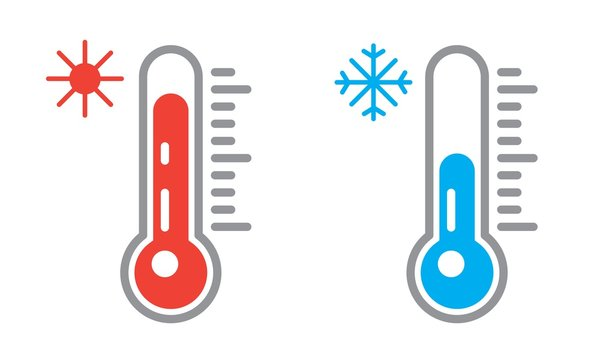

Projects
This page will contain any projects that I have done in the past
and there will be screenshots of some of the projects to give a
glimpse of what the outcomes of the code are. I am trying to grow
as a programmer, so the projects aren't advanced (yet). I would
appreciate any feedback via an email as I do want to grow and
break into the technology industry.
Medical Application
Languages/Frameworks: SQL, MySQL
Project Summary:
- Designed and implemented a relational database schema for a surgery
management system, including table creation and data insertion
-
Performed complex SQL queries involving aggregate functions, subqueries
and aliasing to extract and analyze surgery-related data
-
Demonstrated proficiency in database querying, data manipulation, and
result filtering based on specified conditions
More information about the project and code can be found on my GitHub. Click
on the image below to access it.
Calculator Web Application
Languages/Frameworks: HTML, CSS, Javascript
Project Summary:
-
Developed a fully functional calculator application using HTML, CSS, and
JavaScript, featuring a user-friendly interface and a comprehensive set
of arithmetic operations
-
Implemented event handlers and DOM manipulation techniques to capture user
input, perform calculations, and dynamically update the display
-
Demonstrated proficiency in front-end web development, including designing
responsive layouts, styling with CSS, and writing modular JavaScript code
More information about the project and code can be found on my GitHub. Click
on the image below to access it.
Compound Interest Calculator
Languages/Frameworks: Python
Project Summary:
-
Developed a Python script to calculate the future value of an investment
based on compound interest over a specified time period
-
Implemented user input validation and data type conversion to ensure
accurate and robust calculations
-
Utilized string formatting and f-strings to provide a user-friendly
output, displaying the final amount with proper currency and formatting
More information about the project and code can be found on my GitHub. Click
on the image below to access it. I will try to add a front end to this in the
future.

Temperature conversion
Languages/Frameworks: Python
Project Summary:
- Developed a Python script to convert temperatures between Celsius and
Fahrenheit scales based on user input
-
Implemented functions to handle the conversion logic for both Celsius
to Fahrenheit and Fahrenheit to Celsius
-
Utilized conditional statements and user input validation to ensure
accurate conversions and provide informative error messages
More information about the project and code can be found on my GitHub. Click
on the image below to access it. I will try to add a front end to this in the
future.

Timer
Languages/Frameworks: Python
Project Summary:
-
Developed a Python script to create a countdown timer based on user
input of time in seconds
-
Implemented a loop that calculates and displays the remaining hours,
minutes, and seconds using appropriate formatting
-
Utilized the time module to introduce a delay between each iteration,
providing a real-time countdown experience
More information about the project and code can be found on my GitHub. Click
on the image below to access it. I will try to add a front end to this in the
future.

Weight Conversion
Languages/Frameworks: Python
Project Summary:
-
Developed a Python script to convert weight measurements between
kilograms and pounds based on user input
-
Implemented conditional statements and input validation to handle
different unit choices and ensure accurate conversions
-
Utilized string formatting and rounding functions to display the
converted weight value with the appropriate unit and desired precision
More information about the project and code can be found on my GitHub. Click
on the image below to access it. I will try to add a front end to this in the
future.
Python Calculator
Languages/Frameworks: Python
Project Summary:
-
Developed a Python program that performs various arithmetic operations
(addition, subtraction, multiplication, division, exponentiation, square
root, and absolute value) based on user input.
-
Implemented input validation and error handling, including preventing
division by zero and handling invalid operator inputs.
-
Utilized formatted string output and rounding to enhance the user experience
and display results with a specified number of decimal places.
More information about the project and code can be found on my GitHub. Click
on the image below to access it. I will try to add a front end to this in the
future.
Random Walk Simulation
Languages/Frameworks: Python, NumPy, Matplotlib
Project Summary:
-
Proficient in Python programming, with expertise in utilizing NumPy for
numerical computations and simulations, such as random number generation,
random walks, and probability distributions.
-
Adept at data visualization using the Matplotlib library, capable of creating
insightful plots, histograms, and visualizations to represent and analyze
complex data.
-
Experienced in designing and implementing Monte Carlo simulations and random
walk algorithms to model and analyze stochastic processes, such as the Empire
State Building game.
More information about the project and code can be found on my GitHub. Click
on the image below to access it.